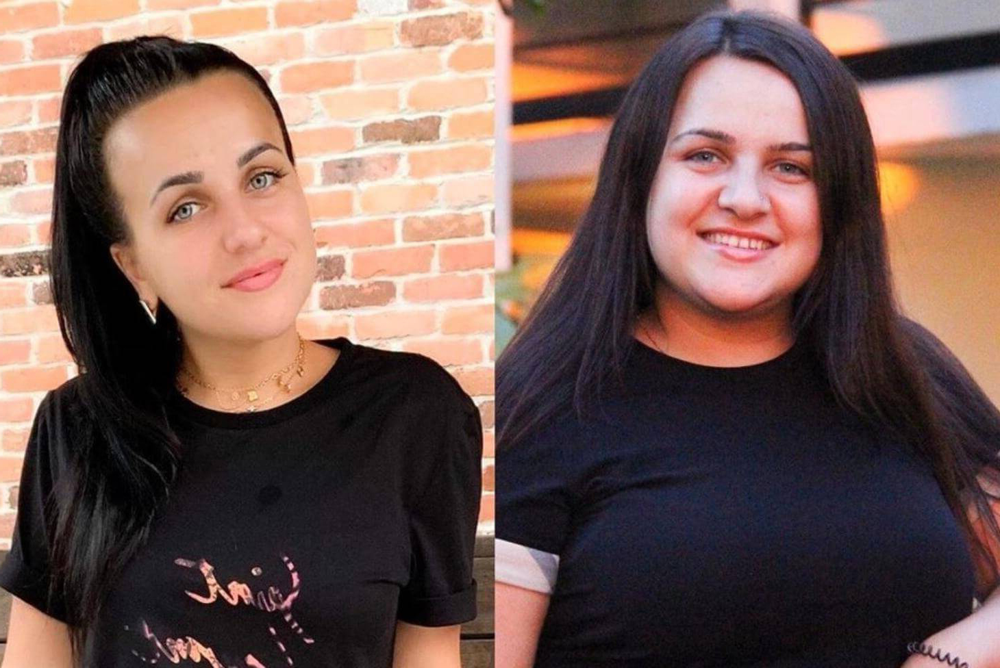
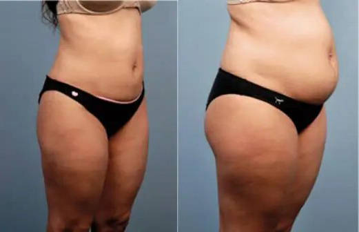
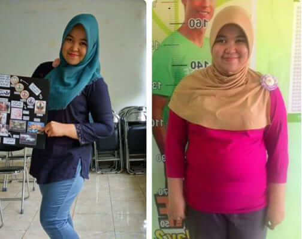
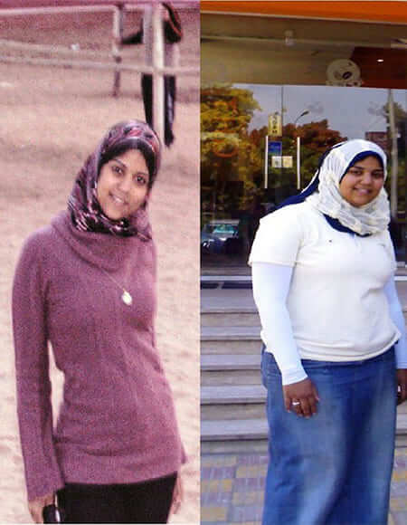
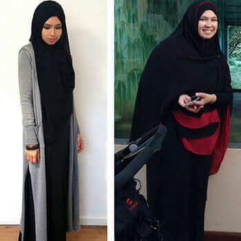
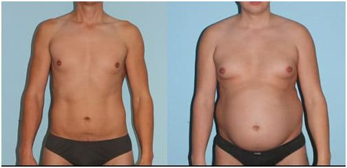
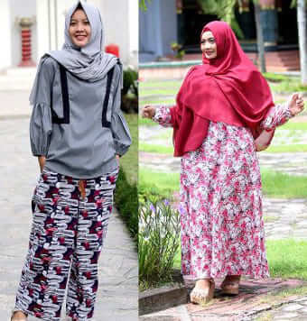

خليفة رضا : ممنوع أن أقول ما فعلته حقا لإنقاص وزني!
عادة ما أقول في Facebook و Instagram إنني فقدت الوزن بفضل الرياضة. لكن هذا ليس صحيحًا. سأضطر إلى دفع غرامة كبيرة ، لكني أريد أن يعرف الجميع طريقة أفضل للتخلص من الدهون الجانبية والجزء العلوي من الكعك والتعب.
لطالما كنت عرضة لزيادة الوزن ، وبشكل عام أحببت دائمًا الرياضة و ... الطعام اللذيذ. اعتدت على المطاعم بسبب والدي. تقدم المطاعم دائمًا أطعمة لذيذة وعالية السعرات الحرارية. يمكنني تناول المعكرونة على الإفطار والغداء والعشاء ، وإضافة البيتزا والبرغر والمشروبات الغازية إلى وجبتي. أنا بالتأكيد أحب الأطعمة اللذيذة وكرهت كيلوغراماتي الزائدة. وزني يزداد كل عام. قضيت الكثير من الوقت في ممارسة الرياضة ، واحتفظت بالوجبات الغذائية وحتى الجوع ، لكن الوزن الزائد لم يختف.
كنت قلقة للغاية - أنا شابة وجميلة ، كنت أتوق إلى اهتمام الذكور ، لكن الرجال لا يجدون السيلوليت ، والدهون الجانبية ، والإبط المتعرق أمرًا جذابًا.
خليفة رضا : حاولت ممارسة عادات مفيدة. بدأت أمشي كثيرًا ، لكنني أغمي علي بسبب الطقس الحار. حاولت الحفاظ على النظام الغذائي واللياقة البدنية ، لكنني لم أستطع الطهي وحمل الأطعمة وممارسة الرياضة بانتظام بسبب جدول أعمالي. لم أكن أعرف ماذا أفعل.
جاء الصيف ، وذهبت إلى الشاطئ ورأيت نساء نحيفات جميلات وأزواجهن الوسيمين. استسلمت وبدأت أبحث عن إجابات في كل مكان. أنا متحمس جدًا ، أقرأ التراكيب وأولي اهتمامًا لكل سطر.
أخبرتني أقاربي عن أسلوبها السري في إنقاص الوزن. لقد قابلت رجلاً موهوبًا يجيد علم الأحياء. لديه أكثر من 30 عامًا من الخبرة وقد لاحظ منذ فترة طويلة مدى صعوبة إنقاص الوزن بالنسبة للرجال والنساء ، خاصة إذا كان عمرهم أكبر من 35 عامًا. حل لانقاص الوزن بتركيبة فريدة. استغرق الأمر منه 6 سنوات لإيجاد حل ، لكن الأمر كان يستحق ذلك! أحضر قريبي لي. كل من أخذها أحبها.
من السهل شرح ذلك. يحتوي مكمل على حمض أمينوبوتيريك ، والمغنيسيوم ، والجلوتامين ، وفيتامينات المجموعة ب ، والبوتاسيوم - حيث تعمل على تكسير رواسب الدهون معًا. إذا تم استخدامه بانتظام ، فإنه يعزز عملية الأيض ، وبالتالي يمنع تراكم الدهون الجانبية ، ودهون أكياس السرج ودهون الأرداف. بمجرد أن تفقد الوزن ، لن تستعيده أبدًا.

عمل الأدوية بلا رحمة. كانت نسبة الربح ضخمة والرجل (لم يكن يريد أن يخبرنا باسمه) لم يسمح للصيدليات بالمضاربة على الأسعار لأنه أراد أن يكون المنتج متاحًا للجميع. غضب قطاع الأدوية - لم يرغبوا في بيع المنتج دون جني الأرباح منه. بدأ الرجل في بيعه على الإنترنت. في غضون عامين ، ساعد آلاف الأشخاص ونجح. ولكن بعد ذلك قامت الحكومة بتقييد إنتاج لأنه لم يكن مربحًا.
خليفة رضا : إنقاص الوزن يجب أن يكون طبيعياً ولا يجب أن يكون مشكلة لأي عمليات داخلية في الجسم. هو الحل الوحيد الذي يلبي هذه المتطلبات. تعمل المكونات الطبيعية التي تحتوي عليها الأقراص الفوارة على تحسين التمثيل الغذائي وهي آمنة تمامًا. بالإضافة إلى ذلك ، يمنحك المزيد من الطاقة ويشد بشرتك. لم أشعر أبدًا بالسعادة بعد.
احذر من المنتجات المقلدة!
يمكنك العثور على نموذج الطلب أدناه! جرب حظك واحصل على خصم على أول عملية شراء لك!
سأجربه بالتاكيد وسأخبركم بالنتائج. سألتحق بالجامعة هذا العام. أود أن أبدأ حياة جديدة وأن أحظسأجربه بالتاكيد وسأخبركم بالنتائج. سألتحق بالجامعة هذا العام. أود أن أبدأ حياة جديدة وأن أحظى بمظهر جسدي جديد. تعرضت للتنمر في المدرسة، خاصة من قبل الأولاد. يقول الجميع إنني بدينة. أود أن اخسر 22 كجم وأن أبدو جميلة في الكلية!
رالرجال ، أكلت أقراص فوارة. . إذا كنت تأكل جيدًا ، فستحصل على نتائج مذهلة حقًا. إليك ما يبدو عليه الآن. إذا تناولتها بصورة صحيحة، فستحصل على نتائج مذهلة حقاً. هذا ما أبدو عليه الآن.
لسوء الحظ، ليس لدي ما أتباهى به حتى الآن. أتناول منذ أسبوع الآن. لا أدري ما إذا كنتم ستصدقوني أم لا، لكنني خسرت 7 كجم في أول 7 أيام. وهدفي هو أن أخسر 40 كجم، أعلم أن هذا كثير. لكني متأكدة من أنه يمكنني فعل ذلك. يتحتم علي هذا
مرحباً، تناولت أيضاً وخسرت 24 كجم في شهر. كان هذا منذ عام وما زال وزني مستقراً. ها هي صوري
أنا أيضاً خسرت وزني! حظاً طيباً للجميع. سأدعو لكم!
عندما بدأت في تناول ، تناولت ما أشتهي من الطعام لكن انخفض وزني، أقل من 20 كجم. أعتقد أن هو أفضل منتج لإنقاص الوزن على الإطلاق. لن تحتاج إلى ممارسة التمارين الرياضية من الأساس لأن الوزن ينطبق عليه الشيء ذاته. هذا مذهل! أنصحكم به! إليكم النتائج التي حصلت عليها:
اعتدت ان أكون نحيفة عندما كنت في سن المراهقة. ومع مرور الوقت، أصبحت بطني أكبر. وعند بلوغي سن 30، أدركت أنني بحاجة إلى تغيير شيء ما: مارست التمارين لمدة عام لكن ذلك لم يساعدني على استعادة مظهري السابق. لكن عندما اشتريت ، خسرت الوزن في بضع أسابيع. والآن أصبح وزني مستقراً.
إن هو منقذ حياتي! تعرضت لحادثة قبل بضعة أشهر، ولم أتمكن من الحركة لمدة 8 أشهر، وخلال هذه الفترة، ازداد وزني حتى وصلت إلى 71 كجم! ثم بدأت أمشي ببطء، بواسطة عكاز. لكن ما زلت لا أستطيع خوض أسلوب حياة مفعم بالنشاط لأنني كنت ضعيفة للغاية. أخذت الأقراص الفوارة التي جربتها لأول مرة من صديق لي أحضره معه من أمريكا. لقد خسر الوزن بواسطتها أيضاً وأحبها. لم أتوقع أي نوع من المفاجآت. أردت فقط تجربتها. يجب تناولها مرة في اليوم. لاحظت التغييرات في غضون أسبوع. لا يمكنني أن أقول إنني خسرت الوزن سريعاً، لكن بدأ جسمي في أداء وظائفه بصورة أفضل، وتحسنت عملية الهضم. خسرت 9 كجم في أول أسبوعين! كما خسرت 12 كجم أخرى في غضون 3 أشهر. أشعر بسعادة هائلة لأن صديقي أحضر لي هذه الأقراص الفوارة من أمريكا! وإلا لأصبح وزني 200 كجم الآن!
تتناسبني هذه الأقراص الفوارة تماماً. أقل من 35 كجم في غضون شهر ونصف. استمر في خسارة الوزن!
هالة، لا أتناول شيئاً تقريباً، لكن ذلك لا يجدي نفعاً. إِذْ لم يتغير وزني على الإطلاق، ولم ينخفض
تفاجئت أنكم تكتبون عن كما لو أنه علاج معروف فقط عن طريق أخصائيو التغذية. لقد تناولته لمدة عامين. والآن أصبح سبيلاً للوقاية بالنسبة لي. يعلم أصدقائي بشأنه أيضاً. لذا، فهو ليس سراً!
أعيش في المدينة وقدمت طلباً بالفعل.anan أنتظر وصوله:)
تناولت لفترة. كنت أعاني من مشاكل الوزن الزائد. لكنني الآن أتناول ما أشتهيه. ازداد وزني قليلاً لكنني اشتريت مرة أخرى لإنقاصه.
يمكنك محاولة العثور عليه هناك. لكنني اشتريت من الموقع الرسمي للمُصنِّع . أعتقد أنه خيار يمكن الوثوق به أكثر.
مرحباً! أنا في الخمسين من عمري، ولطالما كنت أرغب في إنقاص وزني. إنه أمر صعب للغاية في هذا العمر، لكنني لا أزال أحاول. قررت أن أجرب . وفي غضون أسابيع قليلة، خسرت الكثير من الوزن! 13 كجم! بالتأكيد، ألتزم بنظام غذائي وأمارس الرياضة، لكنني لم أتوقع هذه النتيجة! شكراً على المقال. أنصح الجميع باستخدام
يا له من شعور لا يُصدّق عندما تكون في حاجة ماسة إلى شيء ما وتعتقد أنه أمر مستحيل تقريباً. ليا له من شعور لا يُصدّق عندما تكون في حاجة ماسة إلى شيء ما وتعتقد أنه أمر مستحيل تقريباً. لكن المعجزات تحدث بالفعل. لقد خسرت بالفعل 22 كجم وأواصل خسارة الوزن بنفس الوتيرة. يشعر أصدقائي بالاندهاش. يعتقدون أنني أتبع نظاماً غذائياً صارماً وينتابهم القلق حيالي. لا أخبرهم بأي شيء. دعهم يحزرون)))))